CS 463G & CS 663
(Intro to) AI
Lecture 38: Transformers (cont’d)
Fall 2026
Recall: queries Q and keys K set weights; values V supply content. Each vector is a column, and d_k is the number of key/query features:
O=V\,\operatorname{softmax}_{\text{columns}}\!\left(\frac{K^TQ}{\sqrt{d_k}}\right).
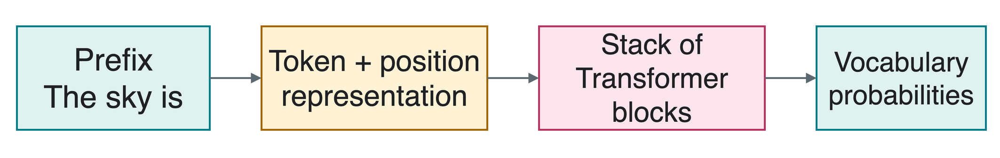
A block is a repeated group of neural-network operations. A language model needs complete blocks and an output head, not just one attention calculation.
An attention head is one attention computation with its own learned query, key, and value projections. Multi-head attention (MHA) runs several heads on the same input.
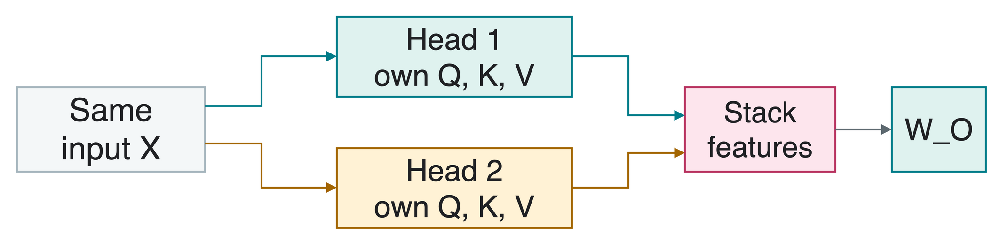
Concatenate means stack the head outputs end to end, preserving their separate coordinates. A learned output projection W_O mixes those coordinates.
Heads can learn different relationships. They are not required to specialize in predefined roles or to produce different attention patterns.
For one query, suppose the head outputs are u_1=(2,0)^T and u_2=(0,3)^T.
Concatenation gives four features, not their two-feature sum:
c=\begin{bmatrix}u_1\\u_2\end{bmatrix} =\begin{bmatrix}2\\0\\0\\3\end{bmatrix}.
With output projection W_O=\begin{bmatrix}1&0&1&0\\0&1&0&1\end{bmatrix}, what is W_Oc?
W_Oc=(2,3)^T. The 2\times4 projection returns two features. Learned weights can mix the head coordinates differently.
Teacher forcing uses the correct earlier tokens from a training example. For the sentence “The sky is blue”, the target at each input position is the next token:
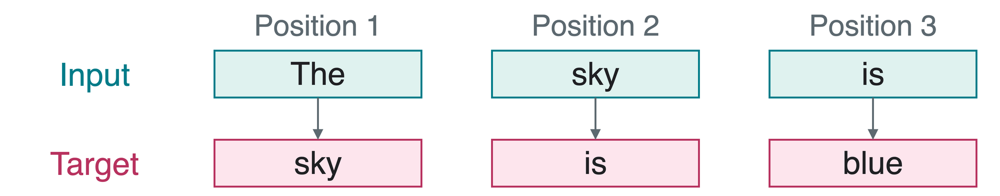
A causal mask blocks attention to later input positions. All training inputs may be loaded together, but each prediction must use only its allowed prefix.
At input position 2 (sky), can the model read input position 3 (is) to predict is?
No. That would reveal the target itself. Position 2 may read only The and sky.
In the score matrix, row j is a key position and column i is a query position. The additive mask has M_{j,i}=0 when j\le i, and -\infty otherwise.
A=\operatorname{softmax}_{\text{columns}}\!\left(\frac{K^TQ}{\sqrt{d_k}}+M\right).
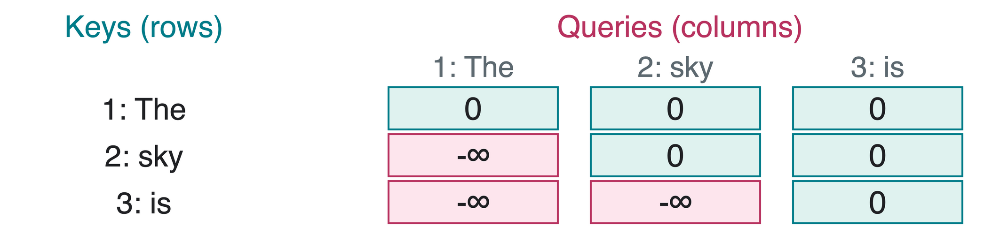
If the three scores in query column 2 were all zero before masking, what weights would result?
(1/2,1/2,0)^T. Mask before softmax: blocked positions receive zero weight, and allowed weights still sum to one.
Inputs are already projected for one sequence. @ is matrix multiplication; n counts positions and dk counts key/query features.
Axis 0 normalizes down each query column, across keys. The inner loop is empty when i = n.
The mask permits parallel training positions without allowing a prediction to use future input.
Attention alone, without position information or a causal mask, has no built-in coordinates for first, second, or third. Order can change meaning:
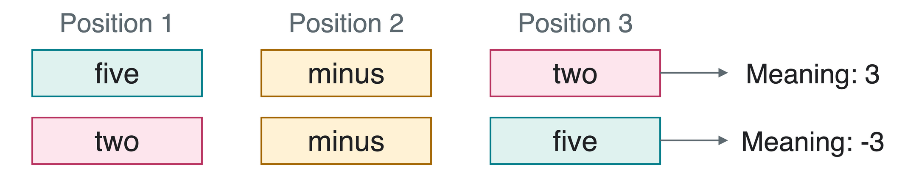
A positional encoding supplies location information. One approach adds position vector p_t to token embedding e_t:
z_t=e_t+p_t.
Content says which token; a position signal says where it occurs. Position vectors may be learned or computed from a fixed rule.
A sinusoid is a sine or cosine wave. The original Transformer uses pairs of waves that vary at different rates. For even embedding size d_e:
p_t[2r]=\sin(t\omega_r),\qquad p_t[2r+1]=\cos(t\omega_r), \qquad \omega_r=10000^{-2r/d_e}.
Here t=0,1,\ldots is position, r=0,\ldots,d_e/2-1 indexes feature pairs, and \omega_r is the angle change per position in radians.
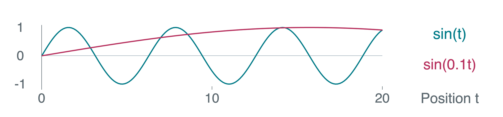
For the first pair, t=0 gives (0,1) and t=1 gives approximately (0.841,0.540). Multiple rates supply position signals at different scales.
Rotary Position Embedding (RoPE) rotates feature pairs in queries and keys. Let R(\phi) be a 2D rotation by angle \phi, i,j the query/key positions, and \theta the angle step per position:
\tilde q_i=R(i\theta)q_i,\qquad \tilde k_j=R(j\theta)k_j.
Below, use q_i=k_j=(1,0)^T and \theta=\pi/2: a quarter turn per position.
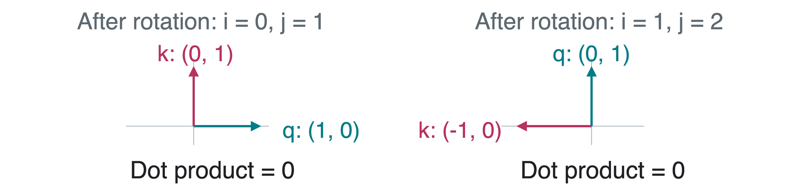
\tilde q_i^T\tilde k_j=q_i^T R((j-i)\theta)k_j.
The positional factor uses offset j-i; query/key content still matters.
Jianlin Su et al. (2021), RoFormer: Enhanced Transformer with Rotary Position Embedding.
A feedforward network (FFN) transforms each position independently:
f(x)=W_2\,\operatorname{ReLU}(W_1x+b_1)+b_2.
W_1,W_2 are learned matrices and b_1,b_2 are biases. ReLU (rectified linear unit) is \max(0,a) for each feature a.
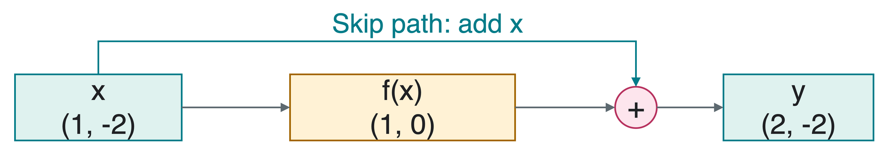
A residual connection (or skip connection) adds the input back: y=x+f(x). If f(x)=0, then y=x.
Attention mixes positions; the FFN transforms features. Residuals add refinements to the input.
Layer normalization (LN) normalizes the features of one token vector, rather than averaging different sequence positions.
For feature x_a, let \mu be the mean of that vector’s features and v their mean squared deviation from \mu:
y_a=\gamma_a\frac{x_a-\mu}{\sqrt{v+\epsilon}}+\beta_a.
\gamma_a and \beta_a are learned scale and shift parameters; \epsilon>0 is a small constant that prevents division by zero.
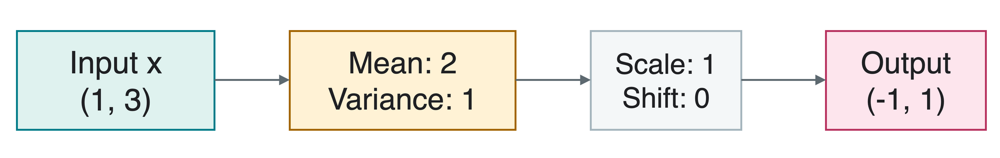
The example uses unit scales and zero shifts, ignoring \epsilon only for hand arithmetic. Actual implementations retain it.
Pre-LN means layer normalization comes before each attention or FFN operation. For input matrix X, call the intermediate result U and output Y:
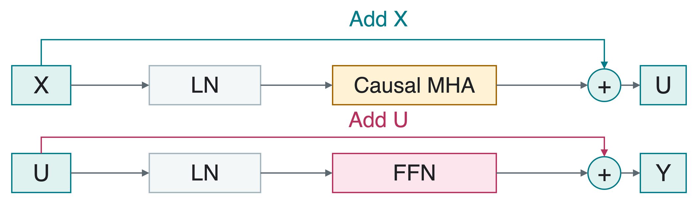
\begin{aligned} U&=X+\operatorname{MHA}_{\text{causal}}(\operatorname{LN}(X)),\\ Y&=U+\operatorname{FFN}(\operatorname{LN}(U)). \end{aligned}
LN and FFN act on each column; causal MHA mixes allowed columns. Stack several blocks to build the model.
Inference uses a trained model without updating its parameters. Let h_n be the final normalized representation at the last prefix position, after all blocks.
The vocabulary is the set of output tokens. An output head produces logits, unnormalized scores for those tokens:
\ell=W_{\text{vocab}}h_n+b,\qquad p=\operatorname{softmax}(\ell).
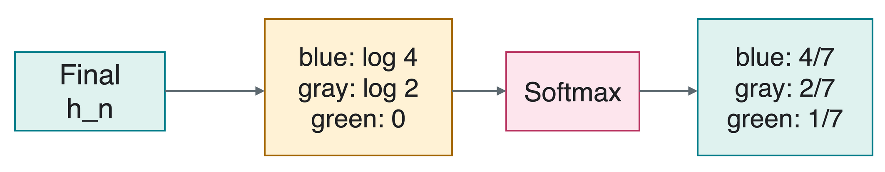
W_{\text{vocab}} and b are learned weights and biases. These probabilities are over vocabulary tokens, not attention’s context positions.
Temperature is a positive sampling setting T. For vocabulary logit \ell_i:
p_i(T)=\frac{\exp(\ell_i/T)}{\sum_j\exp(\ell_j/T)},\qquad T>0.
Using the same toy logits (\log4,\log2,0) for blue, gray, and green:
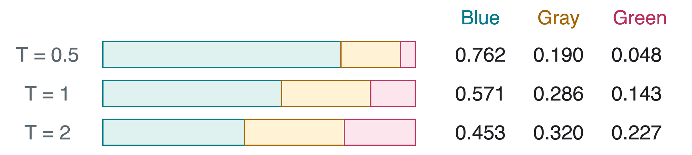
Lower T sharpens; higher T flattens. Greedy decoding chooses a highest-scoring token instead of sampling.
Low positive temperature still allows randomness. It does not change learned weights or guarantee correctness.
Top-k sampling keeps the k highest-scoring vocabulary tokens, removes the others, and renormalizes the remaining probabilities so they sum to 1.
For T=1 and k=2, retain blue and gray from the same toy distribution:
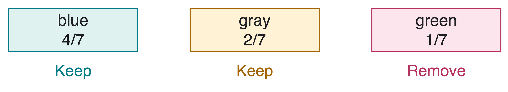
What are the new probabilities? What happens when k=1?
p'(\text{blue})=(4/7)/(6/7)=2/3, p'(\text{gray})=1/3, and p'(\text{green})=0. With k=1, only one top token remains: greedy decoding, after resolving any tie.
A key-value (KV) cache stores earlier keys and values at each attention layer. With causal attention and fixed parameters, future tokens cannot change those earlier representations.
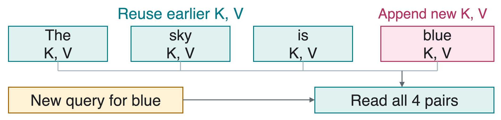
Prefill processes the prompt once. Subsequent decode steps add a token, compute its new per-layer projections, and reuse cached earlier pairs.
Caching avoids recomputing the old prefix. The new query still reads growing context, so cache memory and attention work per new token still grow with context length.
Perplexity (PPL) measures prediction of the true tokens in held-out data, meaning data not used to fit the parameters. It exponentiates the average negative log probability:
\operatorname{PPL}=\exp\!\left(-\frac1N\sum_{t=1}^N\log p(x_t\mid x_{<t})\right).
Here N is the number of scored tokens, x_{<t} is their true earlier context, and \log is the natural logarithm.
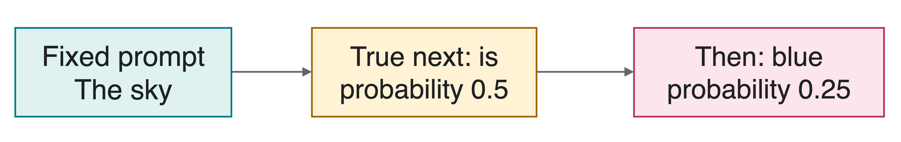
For these two tokens, \operatorname{PPL}=(0.5\times0.25)^{-1/2}=\sqrt8\approx2.828. Lower is better prediction on the same data and tokenization, not proof of factual correctness.
A Vision Transformer (ViT) represents an image as a sequence of small patches, rectangular image regions, rather than word IDs.
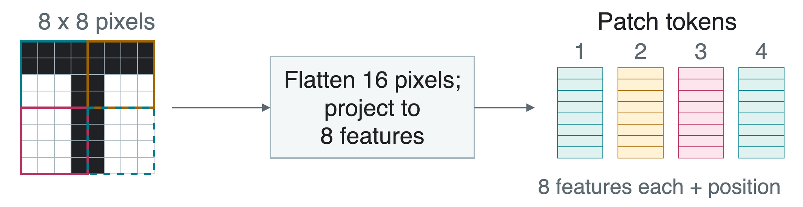
For this 8\times8 grayscale image, 4\times4 patches give 4 patch tokens. Flattening lists a patch’s 16 pixel values in a fixed order. A learned linear projection maps each vector to 8 features, then adds its position vector.
An extra learned vector, the class token, can collect image information whose final representation is used for classification.
Alexey Dosovitskiy et al. (2020/2021), An Image is Worth 16x16 Words: Transformers for Image Recognition at Scale.
A Diffusion Transformer (DiT) uses Transformer blocks as a denoiser, a model for iterative noise removal. It operates on patches of a latent, a compressed image representation.
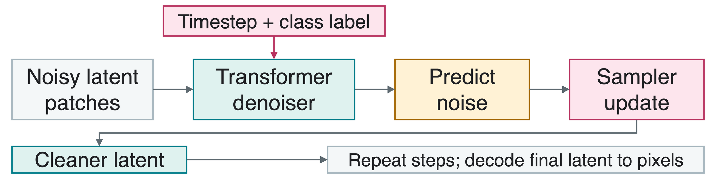
Conditioning supplies extra information: the noise timestep and desired class label. Repeat sampler updates using predicted noise, then decode the final latent to pixels.
The denoiser mixes all image patches together; it does not generate words or patches left to right.
William Peebles and Saining Xie (2022), Scalable Diffusion Models with Transformers.
1. Why mask scores before softmax, instead of just setting some final weights to zero?
Allowed positions must still have weights summing to 1. Pre-softmax masking excludes future keys while normalizing the permitted ones.
2. In the second residual stage, should the skip path add X or the intermediate U?
Add U: Y=U+\operatorname{FFN}(\operatorname{LN}(U)).
3. Does a KV cache make future autoregressive tokens independent?
No. It reuses earlier calculations. The next distribution still depends on the actual prefix chosen so far.
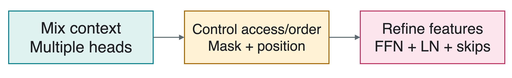